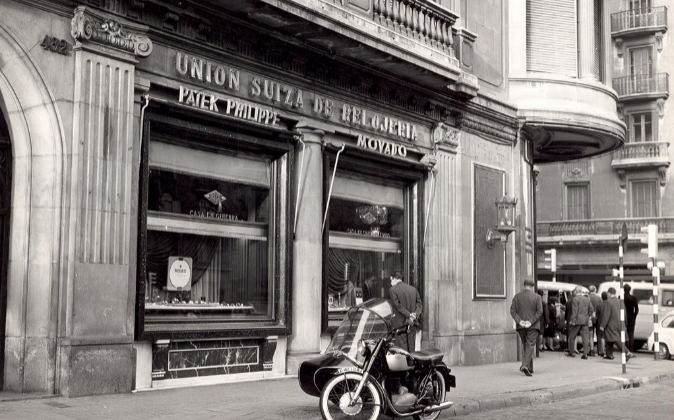

Nuestra historia

Fundada en [año de fundación], [Nombre de la Joyería] ha sido un referente de elegancia y tradición en el mundo de la joyería. Desde sus inicios, nuestra misión ha sido ofrecer piezas que no solo resalten la belleza externa, sino que también lleven consigo el alma y la historia de cada cliente que elige nuestras creaciones.
Nuestra historia comenzó en Apopa, cuando Carlos Rodriguez, un apasionado de la orfebrería, decidió abrir las puertas de su taller con una visión clara: fusionar la técnica ancestral con el diseño contemporáneo, creando joyas que trascendieran el tiempo. A lo largo de los años, la dedicación y el compromiso con la calidad nos han permitido evolucionar, sin perder la esencia artesanal que nos caracteriza.
Desde los primeros anillos de compromiso hasta las piezas más complejas, sparklestudio ha logrado un equilibrio perfecto entre el arte clásico de la joyería y las tendencias modernas. Cada pieza que sale de nuestro taller es un testimonio de la pasión y la maestría de nuestros joyeros, quienes trabajan con los mejores materiales, siempre buscando la perfección en cada detalle.
Con el paso de las décadas, la joyería ha logrado ganarse la confianza de generaciones enteras de clientes, quienes no solo encuentran en nuestras colecciones un accesorio, sino un símbolo de momentos especiales, compromisos y recuerdos inolvidables. Hoy, más que nunca, continuamos con nuestro compromiso de ofrecer joyas que cuenten historias, que brillen con el paso del tiempo y que sigan siendo el reflejo de los momentos más valiosos en la vida de cada persona.
En sparklestudio, seguimos mirando al futuro sin perder de vista nuestras raíces, y con cada pieza que creamos, reafirmamos nuestro compromiso con la excelencia, la innovación y, sobre todo, el amor por el arte de la joyería.